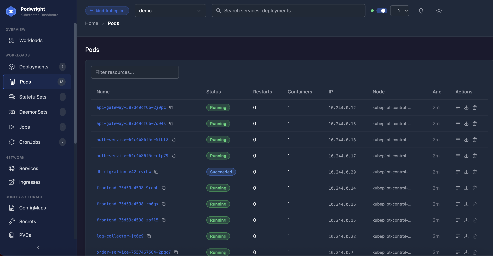

Troubleshoot crashes, clean up namespaces, compare environments, and manage workloads — all in one fast, local dashboard. No database. No agents.
git clone · npm run install:all · npm run dev

Podwright focuses on developer workflows instead of trying to be a full cluster-management suite.
Scans for CrashLoopBackOff, OOMKilled, and ImagePull errors. Pro adds LLM-powered root-cause analysis with concrete fixes.
Permission-based cleanup of completed pods, Helm releases, and orphaned resources. No hardcoded naming rules.
Diff deployments and ConfigMaps across namespaces, then clone stateless services between environments.
Stream logs, exec into containers, view events and health — all without leaving the dashboard.
Track deployment tag changes and pod crash spikes as they happen, with optional browser notifications.
See exactly what your user can do in each namespace with a visual permissions matrix. Uses your local kubeconfig.
Start free. Upgrade when you want AI-powered troubleshooting.
Everything you need for daily K8s work.
AI-powered troubleshooting & more.
per developer, billed monthly
Need SSO, audit logs, or team management? Contact us about Enterprise.
git clone https://github.com/Prashant2996/podwright
cd podwright && npm run install:all
npm run dev